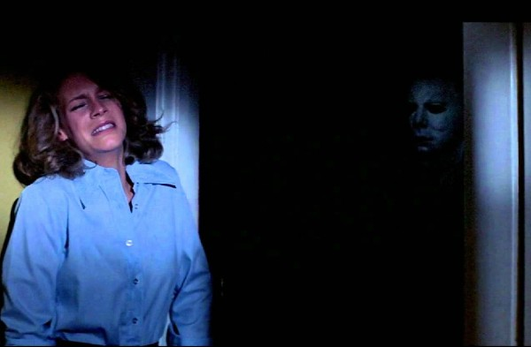
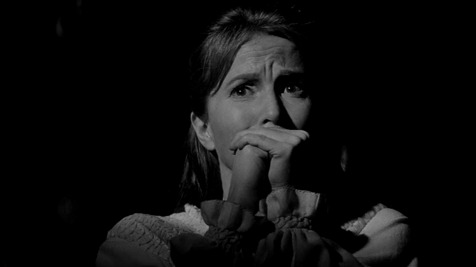
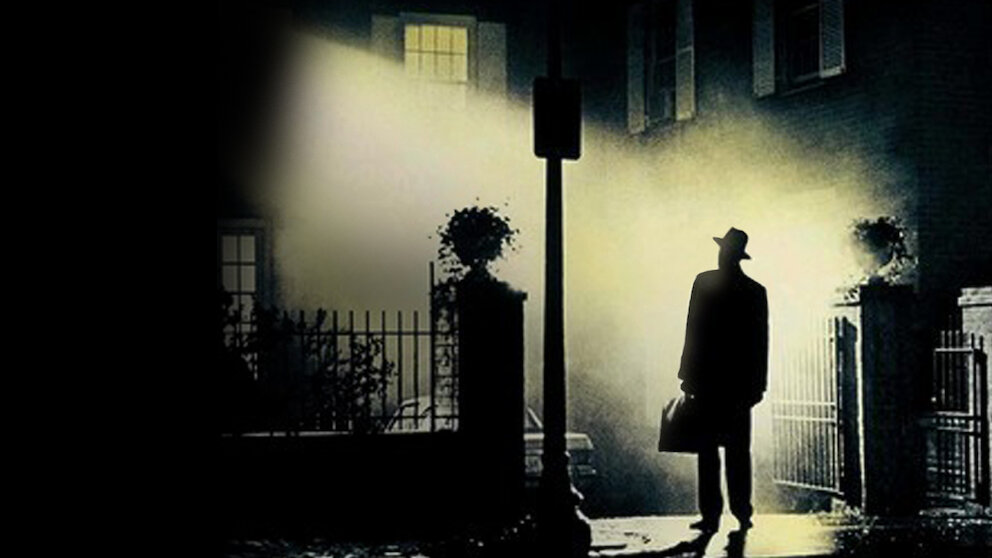
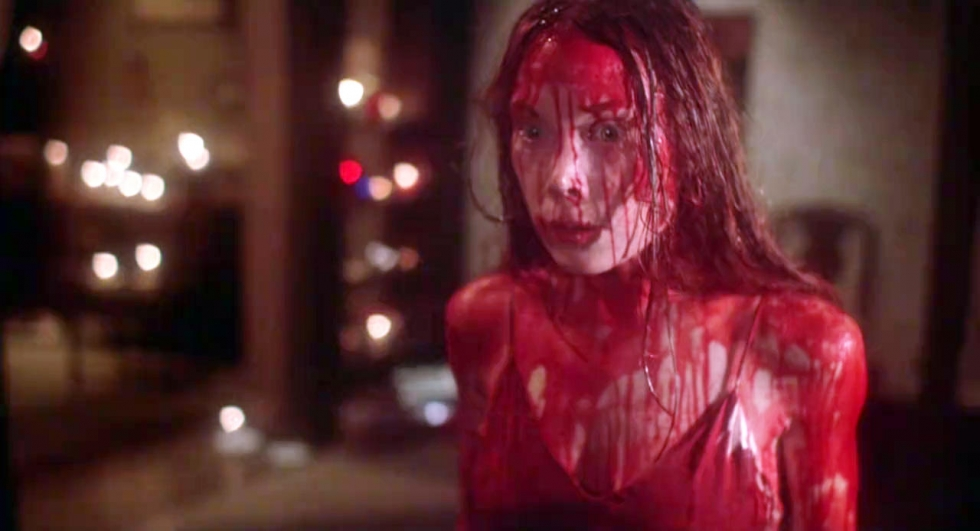
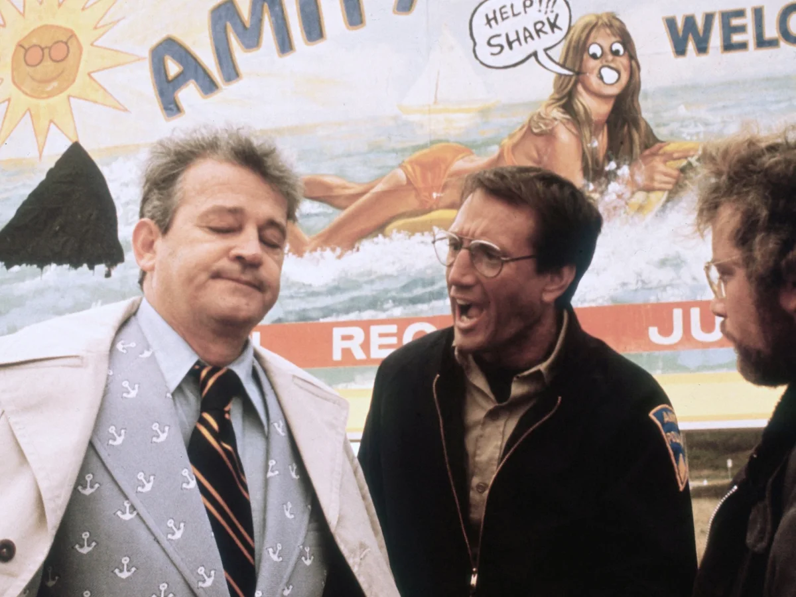
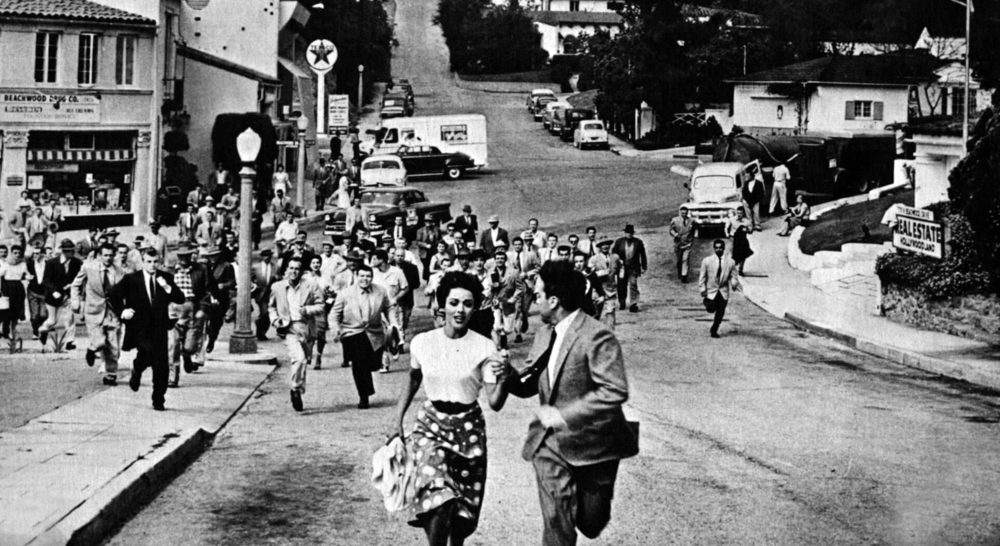
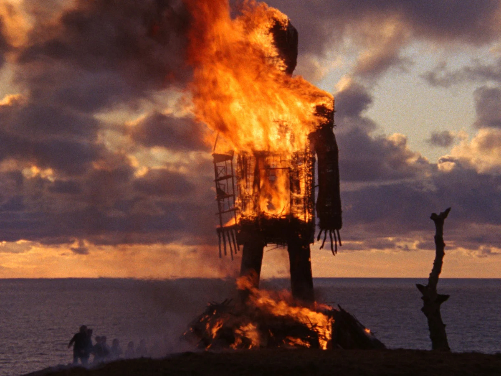

When Nobody Believes You: 7 Horror Movies About the Terror of Being Right Too Early
The monster is terrifying. But what happens when everyone you know insists that it doesn't exist?
Introduction: The Most Dangerous Thing In a Horror Movie Might Be Nobody Listening
Imagine going about your day, all is well, but you start noticing something strange about your neighbor today. Maybe they suddenly behave differently, speak differently, or look at you like you two have never even met. You try to tell someone, but they laugh it off. You insist something is wrong, but everyone around you seems perfectly comfortable. Eventually, you start to question yourself. Are you really imagining things? Are you just paranoid? Or are you really the only person who noticed what is happening?
To me, this is one of horror films' most unsettling and recurring nightmares: being the only person who recognizes that something is going terribly wrong.
When we think of horror as a genre, we might first think of big bad monsters, supernatural creatures, masked killers, and things that make you look around at night. However, some of its most effective stories depend on something much more familiar: other people's refusal to acknowledge danger. A monster can be frightening, but it's much more dangerous when the only people who could help you refuse to believe it exists. Now, the protagonist isn’t only fighting for their survival. They are fighting to convince everyone else that survival is even necessary to begin with.
To me, this is a really interesting feature of horror because it changes how viewers experience fear. In a conventional scary movie, viewers might be frightened by what appears on screen. In such films, we, the viewers, are also frustrated by what happens off-screen: conversations go nowhere, obvious warnings are dismissed, authorities refuse to act, and communities protect their comfortable way of life instead of facing reality.
Such distinctions matter. Being disbelieved isn’t always the same as being ignored, and being ignored isn’t always the same as being deceived. These are real-world examples of normality bias, where people refuse to believe in disaster and dramatic irony. Horror uses these to create different kinds of helplessness. A character might have the evidence, the instincts, and the nerve to confront the threat, but that doesn’t guarantee that anyone will listen if it means upsetting their normal.
The list is for horror fans who enjoy looking past the immediate scares and considering what makes these stories psychologically and socially unsettling… and, at times, annoying. It also asks a question that feels relevant outside the movie theater: How much danger can people tolerate when accepting the truth would require them to change something?
So, whether it's a town refusing to close its beaches, a community hiding its darkest traditions, or a family struggling to understand what is happening to their beloved daughter, these seven films show that the most frightening things aren’t always behind you, but rather… “You’re just imagining things”
—
7. Halloween (1978) – When Nobody Takes Your Warnings Seriously

The Fear: Recognizing danger while everyone else treats it as a slight inconvenience
Laurie Strode has a fairly ordinary problem at the beginning of John Carpenter’s Halloween: she thinks something suspicious is happening around her neighborhood. A fairly reasonable reaction that many could relate to. However, it’s Michael Myers, or rather, The Shape, an escaped mental patient who has returned to his hometown and begun stalking her.
One of the film’s most effective choices is its use of Laurie’s isolation. As she becomes increasingly aware of Michael’s presence, the people around her are too occupied with their everyday lives. Her friends? Distracted with dating and socializing, and the adults aren’t immediately aware of the danger developing around them either. Even when Laurie becomes frightened, she can’t get the click for others to understand the seriousness of what she is experiencing. The audience, at least, has the advantage of seeing Michael’s movements and identifying the pattern, creating dramatic irony as we know the danger even when the characters act like it doesn’t exist.
This is effective because Michael isn’t a traditional “monster,” nor does he announce himself like one. He is usually hidden in the background, blending in with the suburban environment, which makes it even more disturbing. A familiar neighborhood becomes a hunting ground, and the people who should make it feel safe are unaware of what’s happening.
Laurie’s experience shows how dangerous it can be when people underestimate a threat simply because they cannot imagine it happening to them. She isn’t wrong, but no one else feels threatened.
Halloween earns its place on the list because its terror comes partly from the distance between what Laurie knows and what everyone else understands. Sometimes being right doesn’t mean people will listen.
Caption: “We see him, Laurie sees him, does anyone else?”
6. The Haunting (1963) – What If You Can’t Even Trust Your Own Mind?

The fear: Experiencing something horrible without being able to prove to even yourself that it exists.
Robert Wise’s The Haunting shows an uncomfortable version of disbelief because it makes the audience wonder if the protagonist is actually experiencing supernatural events. The film follows Eleanor Vance, a psychologically vulnerable woman who joins a group investigating Hill House, a mansion said to be haunted. As strange events begin occurring, Eleanor becomes increasingly emotionally involved with the house. Though the first film never makes her experiences entirely straightforward, later films change that.
Hill House is frightening because it’s never fully explained. Strange noises ring throughout the corridors, doors move on their own, and Eleanor experiences events that may be supernatural or psychological. The other investigators attempt to approach the house scientifically, creating a tension between their rationality and Eleanor’s seemingly personal connection to the supernatural. Rather than simply showing a ghost attacking everyone, the film makes uncertainty itself a part of the horror.
The film also explores the consequences of treating someone’s experiences as merely symptoms & the fantastic mode. Firstly, Eleanor’s feelings and perceptions are repeatedly read through the lens of her mental and emotional vulnerability. Even when strange events happen to the group, her personal involvement makes it hard to distinguish what she knows from what she can prove. This brings us to the fantastic mode, the term for the narrow boundary between what is familiar and the unfamiliar. Both Eleanor's and the watchers' inability to be sure whether a ghost is present brings the movie together.
The Haunting deserves a place on this list because it creates a situation where certainty isn’t possible. Unlike most monster movies, the protagonist can’t just point toward the creature and demand that everyone acknowledge it. The horror is in the possibility that something is wrong, along with the possibility that nobody, including Eleanor, can fully understand what it is.
“If the house is haunting you, how do you prove it when nobody can see what you see?”
5. The Exorcist (1973) – A Mother Knows Something Is Wrong

The fear: Watching someone you love regress while waiting for an explanation.
William Friedkin’s The Exorcist follows Chris MacNeil, a mother whose daughter Regan begins to experience increasingly difficult physical and behavioral changes. What initially appears to be a medical or psychological issue twists into something Chris believes conventional medicine can’t explain. Watching Chris struggle to get anyone to recognize the severity of what is happening to her daughter is the most frightening part.
One of the film’s most interesting decisions is that it doesn’t immediately introduce an explanation. Rather, it takes the viewer through medical examinations, consultations, and other desperate attempts to identify Regan’s condition. It becomes clear to Chris that something beyond orthodox medicine must be responsible.
This idea creates an interesting conflict between two different ways of understanding reality. The medical professionals address it through established scientific accounts, while Chris increasingly believes it must be supernatural. Neither of these realities is shown as an easy solution, and the medical procedures themselves become more disturbing as Regan’s condition worsens.
Chris’s desperation is a major point for the story, as she isn’t particularly looking for a supernatural explanation for entertainment or religious conviction. She is simply a mother trying to save her child. And that allows a willingness to consider unorthodox means of explanation rather than doctors' possibilities.
Eventually, all this desperation leads Father Karras into the situation, bringing religious authority into the picture as another possibility. Even he himself is in a conflict of faith.
The Exorcist earns its place because it turns a parent’s inability to protect their child into an extended nightmare of questions. It suggests that even people with professional knowledge and good intentions can become obstacles.
“Sometimes the most frightening diagnosis is the lack of one”
4. Carrie (1976) – When Everyone Sees the Problem but Nobody Helps

The fear: Being surrounded by people who recognize your suffering but choose to make it worse.
Brian De Palma’s Carrie is a different kind of horror story because its protagonist isn’t struggling to convince everyone that a supernatural threat exists. Instead, she is surrounded by people who constantly refuse to recognize her humanity—showing how cruelty, religious extremism, and social exclusion can create a breeding ground for isolation and vulnerability.
Right from the opening of the movie, Carrie is treated as an outsider, a victim to be picked on. Her mother controls her through religious fanaticism, and the adults with the responsibility to protect fail to provide the sympathy and assistance she needs. The opening scene shows this immediately: after experiencing her first menstrual cycle, Carrie panics because she hasn’t been properly educated. Her classmates immediately respond by mocking & humiliating her.
This scene matters because Carrie’s fear is completely understandable. She is experiencing something unfamiliar, frightening, and possibly painful, but the people around her choose to humiliate her. Her mother, on the other hand, treats ordinary biological development as a source of sin and shame, which I have very strong feelings about, but I digress. Carrie has few people she can trust, and even those who seem sympathetic cannot fully undo the damage done to her.
The film also treats her telekinetic powers in an interesting way. At first, her powers frighten her because she doesn’t understand them herself. However, as her emotional distress increases, her seemingly supernatural abilities become more powerful. Watching a poor girl who craves acceptance, yet is repeatedly pushed towards isolation, is a fear in itself.
The prom sequence acts as a pressure cooker for all these emotions and ingredients. Although Sue tries to help Carrie experience a normal social life, the vicious prank involving the pig’s blood transforms what should have been a moment of acceptance into another public humiliation, which finally snaps her.
Carrie is on this list because it makes us wonder what happens when everyone has an opportunity to understand someone’s suffering, but nobody meaninfully does anything. The monster in the movie isn’t just Carrie or her powers, but the environment that helps create the conditions for the tragedy that follows.
“They wanted a spectacle. They got one”
3. Jaws (1975) – The Town Would Rather Make Money Than Admit There’s a Shark

The fear: Discovering that people responsible for protecting you decided that your safety is negotiable.
Steven Spielberg’s Jaws is one of the clearest examples of institutional denial in horror film. The film follows Police Chief Martin Brody as he attempts to protect the residents and visitors of Amity Island after a great white shark begins attacking people near its beaches. The danger is real; the evidence is mounting, yet the town’s leadership repeatedly refuses to take the threat seriously because acknowledging it could damage the local economy.
Brody’s position is also interesting because he is one of the few people willing to put public safety over the community's financial interests. After the first attack, he wants it closed; however, Mayor Larry Vaughn opposes the decision because the community depends on it for tourism.
This creates a conflict that goes beyond the shark for a good while. The audience understands the shark is dangerous, but also understands the town’s leadership is adding to the danger by refusing to respond appropriately. Brody isn’t just fighting a big fish now; he’s fighting a system of incentives that encourages people to ignore the problems.
The contrast between Brody and Vaughn is especially revealing. Brody’s concerns are based on the possibility of further deaths, which relates to our context, while Vaughn repeatedly stresses the economic consequences of closing the beaches. The threat is only acknowledged when it becomes increasingly difficult to conceal.
The film also shows how institutions can manipulate public perception. Rather than confronting the danger immediately, the town tries to manage the situation to protect its image. This is fairly disturbing because the people visiting Amity have no reason to suspect their safety is being compromised.
Jaws earns its high ranking because its central conflict stays recognizable outside the horror genre. At times, the greatest obstacle to solving a crisis isn’t a lack of evidence; it's that admitting the evidence would be inconvenient or expensive. Sharks may be responsible for attacks, but the town’s leadership helps the shark more than the people.
“The beaches are open, the sharks are out, but the mayor has other priorities”
2. Invasion of the Body Snatchers (1956) – What If Everyone You Know Has Already Been Replaced?

The fear: Realizing that the people around you may no longer be the people you knew
Don Siegel’s Invasion of the Body Snatchers takes that lack of disbelief and turns it into a worldwide existential nightmare. The film follows Dr. Miles Bennell, a physician who gradually discovers that emotionless duplicates are replacing people in his community. These duplicates emerge from mysterious pods and eventually take on the identity of existing humans. The terrifying part is that the replacements are nearly 1:1 matches for the people they imitate.
At first, Miles struggles to understand the strange reports coming from his patients. People insist their family members and friends have somehow changed, even though they look physically identical. Their concerns seem irrational, and their explanations unbelievable. Yet, Miles eventually finds evidence that something could be happening.
The threat in the film spreads past individual cases. As more people are replaced, the distinction between friend and foe becomes harder and harder to see. Miles can’t ask someone for help for fear that the very person he’s asking is an enemy.
This is where the film moves beyond the traditional science-fiction monster story of its time. The pod people represent more than unfamiliar alien threats. Their lack of emotion and individuality creates a disturbing vision of a future in which conformity has replaced human relationships. The horror is the possibility that the people around you can retain their familiar appearance while losing that same recognizability in everything personal.
On top of that, the historical background adds another layer to its interpretation. Made and released during the Cold War, it can be read through anxieties surrounding conformity, ideological suspicion, and fear of losing individual identity. This is also reflected in Siegel's choice to remain vague about his own opinion on McCarthyism and anti-McCarthyism. However, that isn’t the film’s strength, and it doesn’t restrict itself to one political interpretation. The central fear remains understandable across audiences and eras.
Invasion of the Body Snatchers earns second place because it takes disbelief to its logical extreme. When an entire community becomes the threat, no one is left to convince. The protagonist is no longer simply isolated from society; rather, society itself has become something he must escape.
“ They look like your neighbors. They might even remember your name. But they’re not your neighbors anymore.”
1. The Wicker Man (1973) – The Whole Island Knows Something You Don’t

The fear: Discovering that the people denying your claims are actually working together to deceive you.
Robin Hardy’s The Wicker Man takes the theme of disbelief to its most disturbing conclusion. Unlike the other films on this list, Sergeant Neil Howie isn’t necessarily dealing with people who fail to recognize the threat. He investigates a disappearance on the remote Scottish island of Summerisle (Summer Isle), where residents seem unusually cooperative while also concealing information from him. The more he investigates, the clearer it becomes that the island’s seemingly friendly community is hiding something sinister.
The investigation begins as what seems like an easy missing-persons case. He arrives on the island looking for young girl Rowan Morrison, but the residents deny her existence. Their behavior grows increasingly suspicious as they offer contradictory information, engage in strange religious practices, and seem willing to mislead him. Rather than help him solve the case, the islanders want to keep him confused.
This works because the islanders rarely behave like conventional horror villains. They sing, celebrate, socialize, and openly practice their beliefs. Their behavior is unsettling because it seems so normal. Howie, however, approaches the island through his own Christian worldview and assumes his norms of law, morality, and religion will give him authority. He gradually discovers that his assumptions offer him very little protection.
The film likewise complicates who is being unreasonable. Howie’s religious beliefs make him uncomfortable with the islanders' practices, and the islanders view his beliefs as strange and restrictive. This cultural and religious conflict creates a strong tension throughout the film.
The ending spins the entire investigation on its head. Howie was never merely an outsider trying to uncover a secret. He was being guided toward a predetermined fate by the very people he believes he could question and investigate.
The Wicker Man takes the top position because it shows the most complete form of social isolation on this list. In other girls, characters struggle to make people believe them. However, the entire community already knows the truth and deliberately arranges events to prevent the protagonist from understanding it. There is no authority to appeal to, no trustworthy neighbor to ask, and no reliable institution waiting to intervene.
Sometimes the most frightening discovery isn’t that nobody believes you. It's that everyone else has been in on it from the beginning.
“Welcome to Summerisle. Everyone knows why you’re here. Except you.”
Conclusion: The Truth Doesn’t Always Save You
These seven films all show that horror doesn’t always need to hide its monsters. Contrary to filmmakers like Steven Spielberg and Val Lewton, sometimes it is more effective to show the audience exactly what is happening and then surround the protagonist with people who refuse to acknowledge it.
Whether it be Michael Myers stalking Laurie, the mysterious presence inside Hill House, Regan’s possession, Carrie’s social isolation, the shark threatening Amity, the pod people replacing an entire community, or the islanders manipulating Sergeant Howie, each film explores a different form of helplessness. The characters are frightened not only because something terrible is happening, but because the people and institutions around them limit their ability to respond.
The films also differ significantly. Some protagonists are misunderstood, some are deliberately deceived, and some are trapped in situations where the truth is almost impossible to establish. That variety is what makes the theme so interesting and effective. It shows that disbelief isn’t just a single obstacle. It can be a person’s refusal to listen, a community’s desire to maintain a sense of normality, or an institution’s willingness to sacrifice people to protect its own interests.
Maybe the most unsettling takeaway is that recognizing danger is not the same as having the power to stop it. Being right doesn’t mean people will believe you, and being believed doesn’t mean that anyone will help.
So the next time someone tells you something is wrong, maybe it's worth listening before dismissing them.
After all, in horror movies, the person everyone thinks is crazy might be the only person who understands what’s happening.